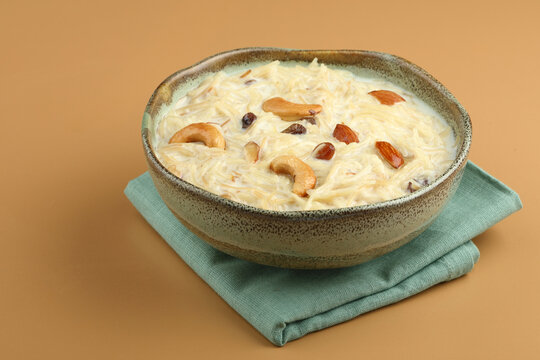

Shemai

Shemai is a cherished traditional dessert from Bangladesh and West Bengal, India. It is a sweet, creamy dish made from roasted vermicelli noodles cooked in milk, often flavored with aromatic spices like cardamom and cinnamon. This delightful dessert is typically garnished with nuts and sometimes raisins, adding a rich texture and flavor.
Shemai is especially popular during festive occasions like Eid but is enjoyed year-round. Its comforting, sweet taste makes it a favorite for many, often served warm and savored as a special treat.
Ingredients
- 100g vermicelli, broken into pieces for roasting
- 1 tbsp ghee
- Pinch of saffron
- 1 bay leaf
- 1 cinnamon stick
- 2-3 cardamom pods, crushed
- 1 star anise
- 300ml whole milk (plus extra if needed)
- 200ml single cream
- 3-4 tbsp sugar
Steps:
- Step 1: In a frying pan, melt the ghee over a medium heat and roast the vermicelli noodles for up to 5 minutes until it turns golden. Take off the heat once it's done.
- Step 2: In a separate pan, heat the milk and cream with saffron, sugar and whole spices and let it gently simmer for 5 minutes.
- Step 3: Once the milk and spices have completely combined, pour in the vermicelli and fold in.
- Step 4: Continue to cook for 5 minutes over a medium-high flame. Keep a watchful eye on the shemai at this point because the milk has a tendency to split or burn at this point. It doesn't take very long for the dessert to thicken.
- Step 5: Serve immediately. When reheating, add extra milk to prevent the shemai from drying. And your shemai is ready!